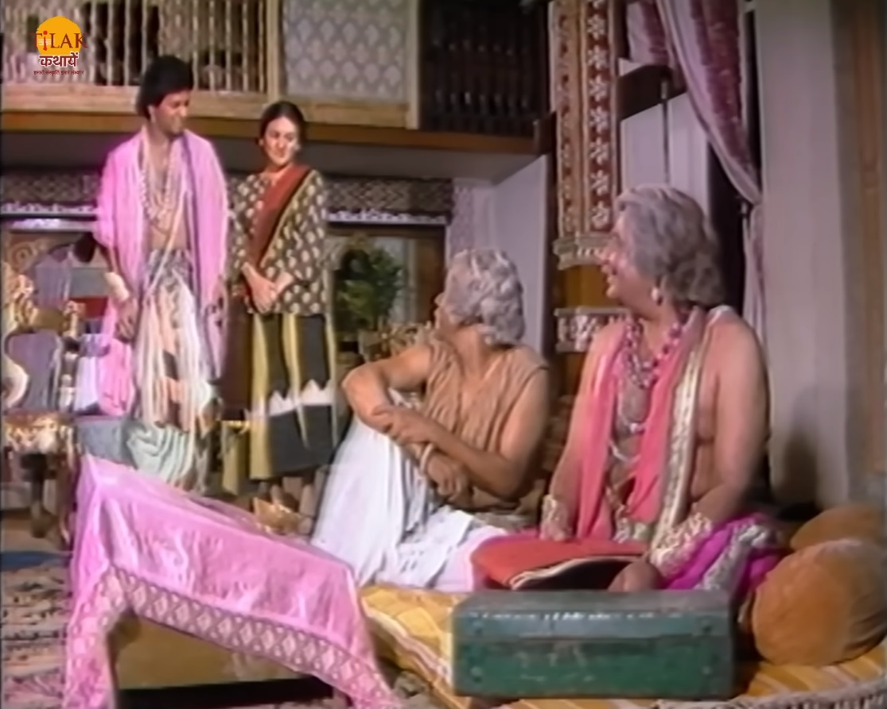
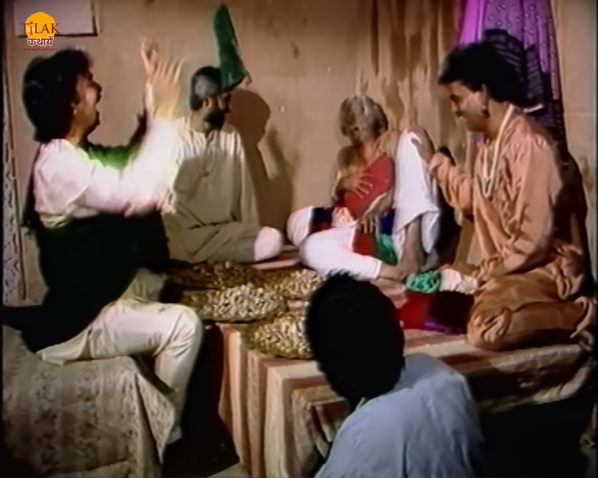
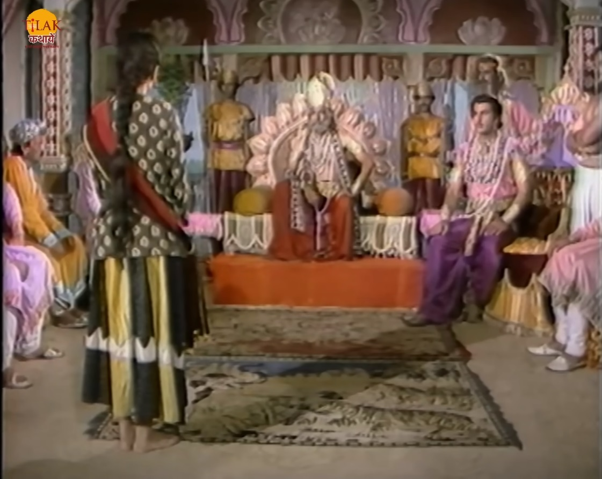
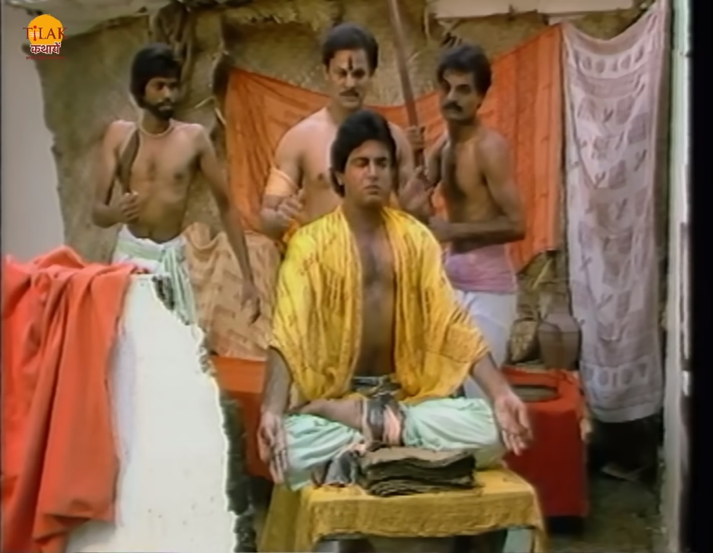
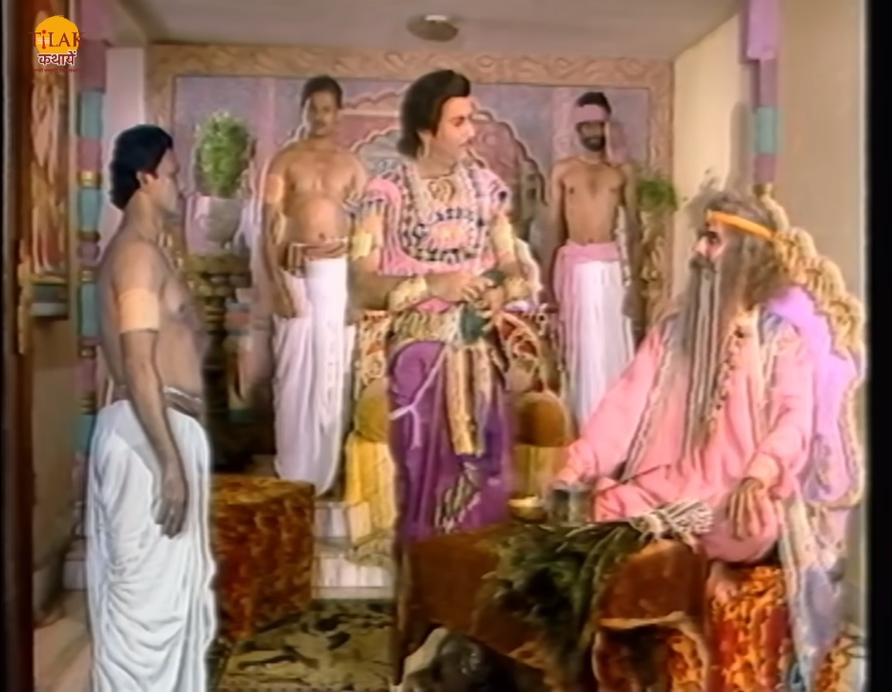
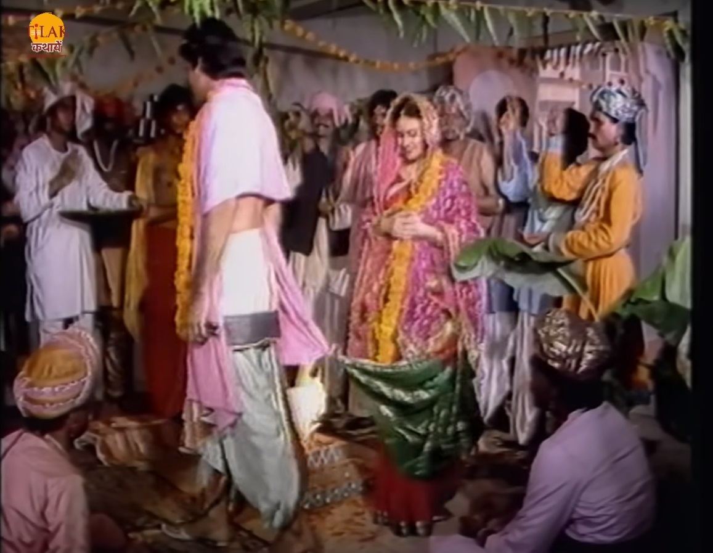

|  | बेताल को विक्रम फिर से पकड़ कर ले चलता है तो बेताल विक्रम को एक नयी कहानी सुनता है जिसमें एक निर्धन आदमी अपूर्व था जो बहुत गरीब था उसका एक मित्र था जिसका नाम था अविनाश जो धनवान था। अपूर्व जल्दी से धनवान बनने के मौक़े की तलाश में। अपूर्व की बेटी अंजलि और अविनाश का बेटा सत्यकाम एक दूसरे से बचपन से प्रेम करते थे। अपूर्व हर क़ीमत पर अपने हालत बदलना चाहता था तो एक दिन अविनाश अयोध्या यात्रा पर जाने की बात करता है और अपूर्व को कहता है की वो उसके बेटे सत्यकाम की मदद उसके क़र्ज़ को उतरने में कर दे। अविनाश ने अपूर्व से कहा की मेरे अयोध्या लौटने पर दोनों बच्चों की शादी का सोचते हैं। |  |
| अपूर्व अविनाश की दौलत पर नज़र टिका लेता है और अविनाश जैसे ही सत्यकाम की जनम पत्रिका ढूँढने जाता है तो पीछे से अविनाश का बहिखाता छिपा लेता है। अपूर्व अविनाश के नक़ली हस्ताक्षर कर कुछ लोगों के साथ मिलकर उनके नाम का क़र्ज़ अविनाश के बहिखाते में लिख देता है। अगले दिन अपूर्व उस बहिखाते को रख देता है और अपने आदमियों को अविनाश के हाथों क़र्ज़ के पैसे दिलवा देता है। सत्यकाम अपने पिता का क़र्ज़ चूकते हुए सारा पैसा और मकान देना पड़ जाता है। |  | अपूर्व अपने साथियों के साथ अपने घर पे मिलता है और अपने हिस्से के बारे में बात करता है तो अंजलि छिप कर सब सुन लेती है। अंजलि यह सुनकर दुःखी होती है तो वह राजा के पास जाती है और राजा को इस बारे में बताती है की उसके पिता ने एक भोले आदमी की लाखों मोहरे लूट ली हैं। राज उसकी बात सुनकर कहता है की तुम्हारी फ़रियाद हम नहीं सुन सकते यदि वह लड़का आकर हमें शिकायत देता तो मैं मदद करता।अंजलि राजा को कहती है की वह लड़का इतना भोला है की वो मेरे पिता पर इल्ज़ाम नहीं लगाएगा। राजा अंजलि को वापस भेज देता है। |
|  | ह सब राजा का बेटा देख और सुन रहा था वह अपने आदमी को अंजलि के पीछे भेजता है। अंजलि राजा के पास से सीधे सत्यकाम के पास आकर सारी बात बताती है तो सत्यकाम कहता है तुम्हारे पिता मेरे पिता के मित्र हैं मैं उनका अपमान नहीं कर सकता और उन्हें दरबार में नहीं खिंच सकता। अविनाश वहीं दिव्य रूप से प्रकट होकर सब सुन लेता है और अपने सारे लूट हुए पैसे और मकान के काग़ज़ उठा लता है। राजा के बेटे का गुप्तचर उसे आकर बताता है की अंजलि सत्यकाम से प्रेम करती है तो राज आक बेटा सत्यकाम को मारने के लिए अपने आदमी को आज्ञा देता है। |  |
| अविनाश दिव्य रूप से अपूर्व के पास आता है और अपूर्व उसे देख कर हैरान हो जाता है की वो तो यात्रा पर गया था तो अविनाश उसे कहता है की वो कल ही वापस लौटा है। अविनाश उस से कहता है की मैंने सुना ही तुमने कुछ दिनों में बहुत पासी कमाएँ हैं। मेरे बेटे सत्यकाम ने मेरे सारे क़र्ज़ चुका दिए हैं इसलिए मेरा हाथ थोड़ा तंग है इसलिए तुम मुझे 1 लाख मोहरे उधार दे दो। अपूर्व अविनाश को मोहरे दे देता है और एक महीने का ब्याज चुकाने की बात करता है तो अविनाश उस से मोहरे ले कर चला जाता है और अगले दिन काली मंदिर के पास आकर अपना सारा हिसाब चुकता करवा लेना। अपूर्व जब वहाँ अगले दिन जाता है तो वहाँ जाकर उसे पता चलता है की अविनाश मार चुका है और उसने उससे यह सब बदला लेने के लिए किया था क्योंकि उसने धोके से उसके बेटे को लूटा था। अपूर्व वहाँ से लौट कर अपने साथियों के पास मदद माँगने जाता है तो उसे उसके साथी धक्के मार कर निकाल देते हैं। अपूर्व की हालत बहुत ख़राब हो जाती है। |  | राजकुमार एक जादूगर को बुलाता है और अपने रूप जादू से सत्यकाम के जैसा करवा कर अंजलि से शादी करने के लिए निकल पड़ता है। अविनाश वापस से आकर अपने बेटे सत्यकाम को होश में लता है और उसे अंजलि की शादी के स्थान पर जाने को कहता है। अपूर्व भी अंजलि के शादी का सुनकर वहाँ पहुँच जाता है। अविनाश राजा के पास भी जाता है और उसे भी शादी के बारे में बताता है। सत्यकाम वहाँ पहुँच जाता है और जैसे ही सत्यकाम राजकुमार के सामने आता है तो जादूगर का जादू उल्टा हो जाता है जिस से राजकुमार का असली रूप सामने आ जाता है और जादूगर मर जाता है। |
| Previous Story | Home | Next Story |